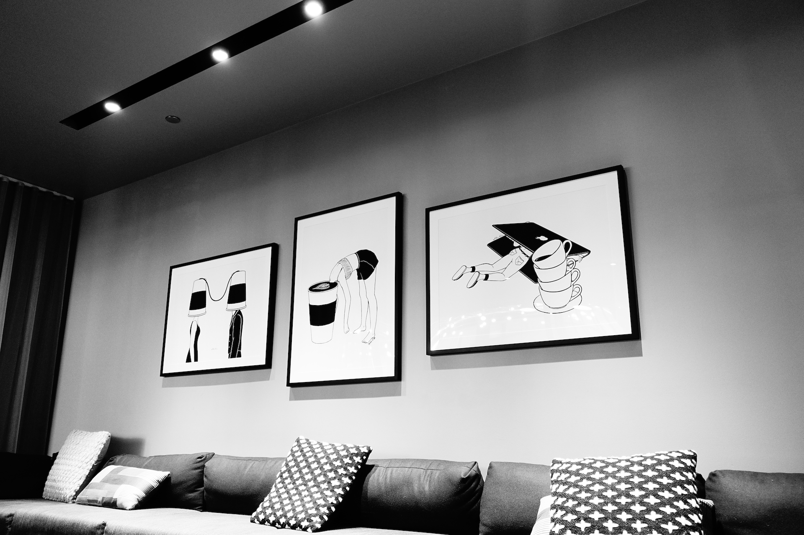

두번째 이직

처음 미국으로 이직한 지 거의 5년이 되고, 영주권을 받은 지 3년이 되었을 때, 정든 이전 직장을 떠나 새로운 직장으로 이직을 했네요. 남들은 왜 이제서야 옮기냐고 하지만 저에겐 아직 할 일이 많이 남아있었고 배울것도 많았던 상황이라 옮기기엔 너무 이른게 아닌가 싶은 생각도 들었습니다.
첫 미국 직장이었지만 그전 메니져는 한국분이었습니다. 일과 중 당연히 영어를 많이 쓰긴 했지만, 영어 말고 한국 말을 쓸 경우도 꽤 있었습니다. 적응하기가 편했죠. 그러다 2018년에 메니져분이 퇴사를 하시고 외국 메니져와 일하게 되어 일하는 동안 한국말은 거의 사용하지 않게 된게 얼마 되지 않았네요. 이제서야 제대로 미국에서 일하는구나 생각이 들고 있었습니다.
이직을 생각하게 된 건 개인적인 성장이 막혀서도 아니고 일이 지루해져서도 아닙니다. 일하는 회사에서 비전을 찾기 어려워서 이직을 결심했네요. 몇년 전 회사가 부정회계를 한 사실이 발각되어 주가는 하락하고 오너가 회사에서 쫓겨나고 경영진이 교체되고 구조조정이 있었습니다. 새 경영진이 위기를 잘 넘겨내고 있었죠. 새로 부임한 CEO가 열정적으로 일하더군요. 이전 오너 경영보다 나아보였습니다. 회사 자체로는 꽤 상황이 좋아지는 것 처럼 보였습니다.
문제는 제가 일하는 스토리지 부문이었죠. 구조조정을 하며 넘어온 임원이 계속 일을 말아먹고 있다는 생각이 들었습니다. 회사 특성상 여러 고객사를 상대해야 하고 그들의 요구를 들어줘야 하는 상황이란 것은 이해가 가지만, 그래서 세일즈, 마케팅이 계속 새 기술, 스펙 변화를 주장하는 것도 이해가 가지만, 그걸 막아줘서 엔지니어가 혼동없이 잘 만들도록 해야 할 엔지니어링 임원이 계속 요구사항을 수용하더군요. 그로 인해 개발사항이 계속 변경되고 그에 따라 일정은 밀리고 검증엔지니어는 턱없이 부족해서 좋은 품질의 IP가 나오기 힘들어지는 등 꼬리에 꼬리를 물고 상황은 좋아지지 않았습니다. 이대로 가다간 진행되고 있는 새 프로젝트가 제대로 완성될 것 같지 않더군요.
그 뿐아니라 스토리지쪽은 저가제품은 대만, 중국 기업이 치고 올라오고, 고가는 대부분 메모리 회사가 직접 만들기 시작하면서 제가 다니던 회사의 제품이 점점 특색을 잃어 갔습니다. 성능이나 안정성이 좋은게 아니면 제품이라도 빨리 스펙에 맞춰서 출시되어야 하는데, 일정이 밀리면서 하염없이 늘어지는 걸 보고 있으니 더 있다간 제가 답답해서 못 버티겠더군요.
그래서 이직을 생각하고 몇군데 알아보기 시작했습니다. 다행히 요즘은 실리콘벨리 경기가 좋아서 여기저기 사람 찾는 곳이 보입니다. 지난 몇년간은 웹개발과 머신러닝의 발전에 힘입어 소프트웨어 엔지니어를 찾는 곳이 많았습니다. 요새는 각 회사별로 ASIC 칩 제작을 시도하면서 디지털 디자인 엔지니어도 좀 구하더군요. 애플의 경우 오래 전 부터 칩 제작을 해 온 터라 항상 사람을 찾고 있었고, 최근 급격하게 채용하는 곳이 페이스북, 마이크로소프트, 아마존, 구글등 소프트웨어가 강한 회사에서 하드웨어 엔지니어를 꽤 구하고 있습니다. 그래서 구지 스토리지 분야에 목 매이지 않아도 되겠더군요. 경력8년이 아쉽긴 하지만 이 참에 새로운 것을 해 보는 것도 나쁘지 않겠다는 생각이 들었네요.
운 좋게 원하던 회사에서 폰인터뷰 보자고 하고 잘 통과되어 온사이트를 거쳐서 오퍼까지 받게되었습니다. 미국에 넘어온 5년전에만 해도 구글에서 일해보고 싶다는 생각이 허무맹랑하다는 말을 주변에서 들었는데 이젠 구글도 칩 디자인을 하면서 운좋게 하드웨어 엔지니어로도 구글에서 일을 하게 되었네요.
완전히 새로운 환경이라 하나 하나 어색하고 서툴긴 하지만 그럭저럭 지난 6개월을 버텨낸것 같습니다. 앞으로는 더 많은 것을 배워야하고 이겨내야겠죠. 이전 회사와 지금 회사가 많이 다른 데, 그 부분은 다음 글에서 좀 더 자세히 설명해볼게요.